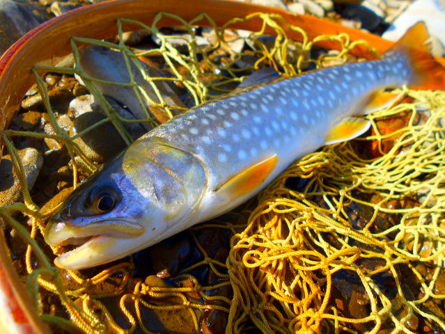
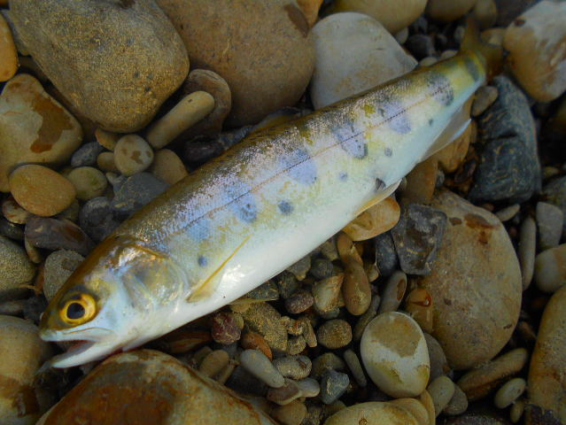

| ２０１７年２月１２日 CHR TNTK まだ開いてない |
| ２０１７年３月４日 CHR TNTK まだ氷がありアタリなし |
| ２０１７年３月５日 塘路湖 |
| ２０１７年３月１１日 KHR HSOOKA 氷はなし。坊主 |
| ２０１７年３月１２日MHRRJ 岩魚８匹 NNSBT274は坊主 |
 |
| ２２センチ |
| ２０１７年３月１８日 CHR TNTK 魚の姿なし。あたりなし。 |
| ２０１７年３月１８日 MHRRJ 岩魚５匹 ２２センチ NNSBTSRは坊主 |
| ２０１７年３月２０日 MHRRJ ４０分 岩魚６匹 |
| ２２センチ |
| ２０１７年３月２５日 MHRRJ ２０分 岩魚４匹 |
| ２０１７年４月１４日 MHRRJ、NNSBTSR、KKC坊主 |
| ２０１７年４月１５日 KSR STGNROADHASI ５０センチ以上の桜鱒バラス。 上り始め。 |
| ２０１７年４月２３日 MHRR 5分で２匹 ルアーに反応しはじめる |
| ２０１７年４月２３日 MSTRGNGN 醤油づけには良い大きさがかなり採れる |
| ２０１７年４月２９日 SHOR_DM２本目橋の車止 虹鱒５匹 ２５センチ以下 |
 |
| ２０１７年４月２９日 SHORDM下の川(高） ネギ沢山採れる。 |
| ２０１７年４月３０日 SHOR_DM２本目橋の車止 虹鱒２匹 SHOR_DM_白樺は坊主 |
| ２０１７年５月２日 NNSBTSR 反応が良くなる。マクロレンズ購入にて撮影。 行者にんにくかなり採れる。 |
|  |
| ２０１７年５月４日 ONBT １０匹。最大４１センチ、平均２８センチ。 ディベロップ１０g |
|  |
| ２０１７年５月５日 CHR 青橋 山女４匹（リリース）。雨鱒０、アカハラ１。 コゴミ採れる。 ディベロップ７g |
| ２０１７年５月７日 ONBT １２匹。雨鱒１、後は山女。 ディベロップ１０g |
 |
| ２０１７年５月７日 WTNB １０匹。山女と岩魚。 ディベロップ３g |
| ２０１７年５月１３日 SHOR_DM_ヘアピン奥インレットと川 ６匹。虹鱒。 BRETTON 2g銀 |
| ２０１７年５月１３日 SHORDM上の川支流 ６匹。虹鱒３０センチ。 ディベロップ５g |
| ２０１７年５月１４日 NNSBTSR ２匹。 行者にんにく大きくなっているが、かなり採れる。 |
 |
| ２０１７年５月１４日 STRTU ２匹。 |
| ２０１７年５月１９日 SHORDM上の川本流ダム上 １時間半１３匹。虹鱒最大３０センチ。 ディベロップ５gと７ｇ |
 |
| 30センチ |
| ２０１７年５月１９日 SHOR_DM_HNRINL ２投１匹、全部で１５匹。あまり大きなのは出ない。 BRETTON 5g金 写真未撮影 |
| ２０１７年５月２１日 MSTR ３０分で１２匹 DEVELOP 3g赤金 |
| ２０１７年５月２５日 SIBTNSMSTR ６０分で１３匹（山女12、雨鱒１ 26センチ） DEVELOP 10g金 |
 |
| ２０１７年５月１９日 SHORDMと上の川本流ダム上 １時間半５匹。虹鱒最大２６センチ。 BRETTON 5g金とディベロップ１０g |
| ２０１７年６月４日 SHOR_DM_ヘアピン奥インレットと川 １時間半で１５匹。虹鱒最大２４センチ。 BRETTON 5g金とChinook7g赤金 |
 |
 |
| ２０１７年６月９日 SHOR_DM_ヘアピン １時間半で８匹。虹鱒最大３０センチ、初めて岩魚を釣る。BRETTON 5g金 |
| ２０１７年６月１０日 MSTR ２時間８匹。山女18センチ。 ディベロップ５g |
| ２０１７年６月１１日 SHOR_DM２本目橋の車止 ７匹。虹鱒２６センチ。 ブレットン赤金５g |
| ２０１７年６月１７日 NKC ２匹。虹鱒２３センチ。 ブレットン赤金５g |
| ２０１７年６月１７日 OSBT １２匹。岩魚、山女 ディベロップ５ｇ |
 |
| ２０１７年６月２４日 SHORDM上の川本流右 １０匹。虹鱒２９センチ |
| ２０１７年６月２日 MSTR １２匹。山女１９センチ |
 |
| ２０１７年７月８日 SHORDM上の川とSHOR_DM_ヘアピン暑いためか１０匹。最大虹鱒28センチ。 BRETTON 5g金とディベロップ３と５g |
| ２０１７年７月１０日 ONBT ２時間で１３匹。山女（１０匹）とウグイ（３匹）。雨鱒と岩魚は釣れない。渇水のため、ディベロップ７g |
| ２０１７年７月１５日 KKKC ３時間で３０匹。山女（１2匹）と岩魚（5匹）。虹鱒（13匹）ルアーマン3g |
| 岩魚２５センチ |
| ２０１７年７月１７日 KKKC ２時間で１７匹。山女、岩魚（5匹）、虹鱒ルアーマン3g 虹鱒２９センチ。 |
| ２０１７年７月２２日 NNSBT274 ３０分で５匹。浸水し終了。 |
| ２０１７年７月２９日 SHOR_DM_ヘアピン全箇所 坊主 |
| ２０１７年８月７日 KKKC ２時間で１5匹。山女（2匹）、岩魚（5匹）、虹鱒 ルアーマン3g ディヴェロップ１０，５，３g 虹鱒２９センチ。 |
| ２０１７年８月５日 SHOR_DM_白樺対岸 虹鱒５匹 |
| ２０１７年８月１０日 KKKC １時間で１匹。岩魚22センチ、ルアーマン3g |
| ２０１７年８月１６日 MHRR ２時間で１５匹。岩魚、山女（19センチ） ルアーマン3g |
 |
| ２０１７年８月１８日 SHOR_DM_白樺対岸 １．５時間で５匹。虹鱒（２９センチ） ブレットン３g赤金 |
| ここから足の指骨折のため釣りは休止。 |
 |
| ２０１７年１１月２５日 KHR NHNMT下流30分 魚影薄い２時間で１匹。雨鱒（30センチちょっと）月虫55 沈。６０オーバは川重くて岸に上げれない。 |